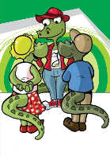

LOS BIOMAS Y LA ACCIÓN DEL HOMBRE
Los seres humanos son parte de los seres vivos que habitan los biomas.
Para satisfacer sus necesidades, los humanos modifican el medio natural.
Por ejemplo, cultivan campos, construyen edificios, puentes, autopistas, entre otras transformaciones.
Los especialistas señalan que actualmente ya no existen ambientes completamente naturales, es decir, que no hayan sido modificados por la acción humana.
La transformación de la naturaleza es imprescindible para la vida humana, pero muchas veces se realiza sin tener los cuidados necesarios y se producen daños que pueden ser irreparables.